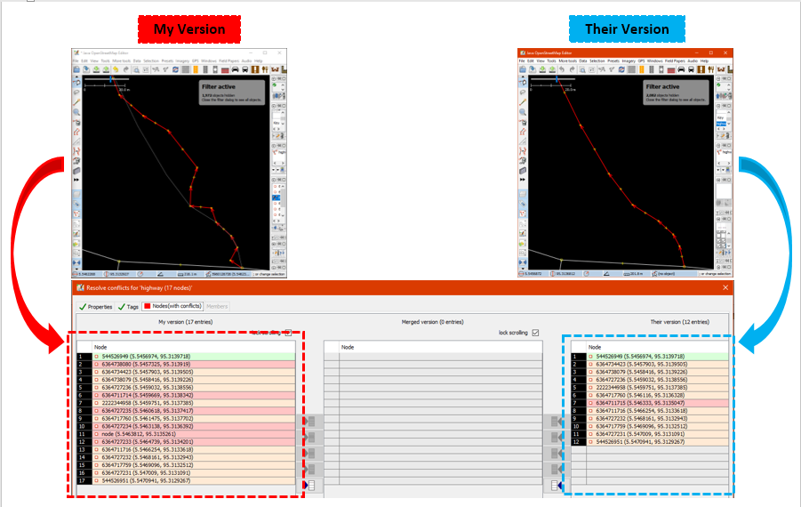

Resolving Conflict on OpenStreetMap Data (OSM)
Objectives:
- Participants can explain what is data conflict on OpenStreetMap
- Participants knowing about types of conflict in JOSM
- Participants can fix data conflicts using JOSM
- Participants know to avoid data conflict in JOSM
When you are uploading your changes in JSOM, some contributors might also do editing in your area. This might occur data conflict in your uploading process. Therefore, in this module, you will learn about data conflict in OpenStreetMap, types of conflict, and how to fix it using JOSM.
I. Data Conflict on OpenStreetMap
When you have edited your changes and were uploading them in JOSM (learn more about this in Using JOSM module), maybe you ever received a message like this:

The picture above shows data conflict in OSM. Why that could possibly happen? This conflict happens because when you edit your data in JOSM, you edit the same data/object(s) with the other contributor in the same time. Thus, the other contributor have uploaded the changes first and have received by OSM server. After that, you also want to upload the same data/object(s) with your own changes. Therefore, your changes will automatically rejected by the server because it causes confusion.
You will face with data conflict when you do changes in JOSM such as editing, adding, or delet some objects in OpenStreetMap, while the other contributor also do the same thing on the objects. The other contributor has uploaded their changes slightly before you. Therefore, when you try to upload your changes, it causes confusion for the OSM Server because it does not know which changes is correct and can be saved. If this happens, then the data conflict need to be fixed before you can continue to upload your changes into OSM server.
The picture above is example of conflict that could happen because of different position with the object between your version (my version) and version of the other contributor / have received by server (their version). To resolve this conflict, you have to choose one version between them (look chapter III. Fixing Data Conflict in JOSM).
II. Types of Data Conflict in JOSM
a. Conflict of Properties
Conflict of properties happens when an object(s) has been moved or deleted so one or more of its node has different location/position than the other version.
The picture above is an example of conflict of properties in JOSM. As can be seen in the picture, in My Version the object has square shape and in the other version (their version) one of the node is deleted then change its shape become triangle. To fixed this, you need to choose which version that correct based on the location of the different nodes in both version.
b. Conflict of Tag
Conflict of tag happens because there are different information (tag) on on the object that has been edited by two or more contributors. The information could be deleted or changed on the other version.

The picture above shows differences between two versions on the same object in JOSM. My version has Rumah Sakit tag (amenity = hospital) with its name value is Rumah Sakit Tebet Raya while the other version (Their version) has tag klinik (amenity = clinic) with name RS Tebet Timur. You have to choose one of them that you think has correct information to fix it before upload it to the server.
c. Conflict of Node
This conflict happens when there are differences order of the nodes in a way or closedway object(s) which have been removed or moved on one of the versions and has been uploaded to the OSM server.

III. Fix Conflict Data in JOSM
Fixing conflict data in JOSM is quite simple, even though most OSM contributors would have some confusion to do it. Generally, every data conflict fixing in JOSM asks you to choose the correct changes between your version and the other version that have uploaded to the server (their version). You have to choose whether to keep your version or delete you version and use their version. Steps to fix conflict data in JOSM as follows:
- When the conflict window appears, you might be only want to select the Synchronize node 5,960,126 only option. However, this option will only fix conflict in one certain nodes. Instead, you should choose Synchronize entire dataset option so you can resolve all conflict nodes in one time.

- After that, JOSM will show how many conflicts that has been detected, Click OK.

- There is a list of conflicts in Conflict panel at bottom right corner in your JOSM. You can choose which conflict you want to fix and click Resolve.

- When you have click the Resolve button, the window will appears and shows detail about detected conflict. The message about conflict might be looks complicated but it actually has simple instruction. You will know about what type of conflict do you have by looking at
 symbol. Therefore, the conflict in this example was caused by different coordinate location and position of object. You can look at a list of changed or moved coordinate as shown in picture below. Thus, conflict in this example was caused by one changed node.
symbol. Therefore, the conflict in this example was caused by different coordinate location and position of object. You can look at a list of changed or moved coordinate as shown in picture below. Thus, conflict in this example was caused by one changed node.
- You only can resolve one conflicts at one time. You can choose which correct version between your version or their version in the server. If you sure that your version is the correct one (you edit / add the object based on your field survey mapping or you already know the object personally), then choose My Version (local dataset). However, if you are not sure about your version and think that the other version more convincing then you can choose Their version (server dataset). Click blue arrow symbol in the version that you choose. If the conflict has been fixed then the symbol will be going turn to green check mark


- After you have select the right version, you have to make sure the color of conflict box has been changed from pink to green. This means you have successfully fixed the conflict.
- Then click Apply Resolution as shown in the picture above. After you have finished all of your conflict, you can start to upload your OSM changes.

- In window menu, you can activate Conflicts
 window. This window shows total number of conflict on all of your data when you click the Resolve button. You also can use another way by right click on one of the conflict and choose Resolve to my versions or Resolve to their versions. To find the object you can right click and click Zoom to Conflict. This will be very useful if you have many conflicts and need to check and fix them one by one.
window. This window shows total number of conflict on all of your data when you click the Resolve button. You also can use another way by right click on one of the conflict and choose Resolve to my versions or Resolve to their versions. To find the object you can right click and click Zoom to Conflict. This will be very useful if you have many conflicts and need to check and fix them one by one.

Note : You can not upload your changes until you have resolved all of your conflict and list of conflict in the conflict window has empty. Keep in mind, you need to be careful when resolving the conflict and need to check it one by one to make sure everything is correct as it should.
IV. Avoiding Data Conflict in JOSM
You can do some things to avoid conflict when uploading your data into OSM server, as follows:
a. Upload your changes continuously
-
To minimize conflict, you can upload your changes continuously. For instance, if you mapped 100 buildings but does not have a good internet connection, you should upload your changes for every 20 buildings or every 15 minutes. The reason for this is because the conflict would have bigger possibility to occur if you upload when it is finished. The longer you waiting to upload the more possibility the data could possibly have edited and uploaded to the server by other contributors. Therefore, the probability of conflict for your edit will increase.
-
If you want to save your OSM data and upload it later, you can update your OSM data first before you upload it. This should be done so you can get the latest OSM data from the server before you upload it. You can do that by click File → Update data or Update Modified then waiting until the updating process is finished. After that, you can upload your changes with Upload data options File menu or just click icon on menu bar.

b. Edit Only in Downloaded Area
You can do mapping in specific area to minimize risk of conflict with avoid editing objects outside your downloaded area in JOSM. This can prevent two or more users editing in same area. Notice that diagonal lines around your downloaded area is an area you need to avoid to edit in JOSM.
After you download the data, your editing area is only area inside which does not have diagonal lines. The area outside you editing area most likely currently editing or have been edited by other contributors. Avoid edit in the area will reduce the risk of getting conflict in your data.
c. Using Tasking Manager
If you want to do collaborative mapping, you can use Tasking Manager. It will help you to divide your mapping area into task grids. Thus, you can choose your mapping area grid easily without worry getting same area with other OSM contributors because once you select certain grid, it will be locked and cannot choose by other contributors.
Any mapping volunteer in the area can choose one grid that they want and after finish they can mark the grid as completed mapped. This will allow a lot of people to map certain area in same time without getting worried to get conflict. You can read how to use Tasking Manager in Using Tasking Manager module.

Summary
If you have followed and finished to practice all the steps in this chapter, You have successfully understand about data conflict in JOSM and how to fix it. Moreover, you also have learned about types of conflict and how to avoid them in JOSM. Congratulations!